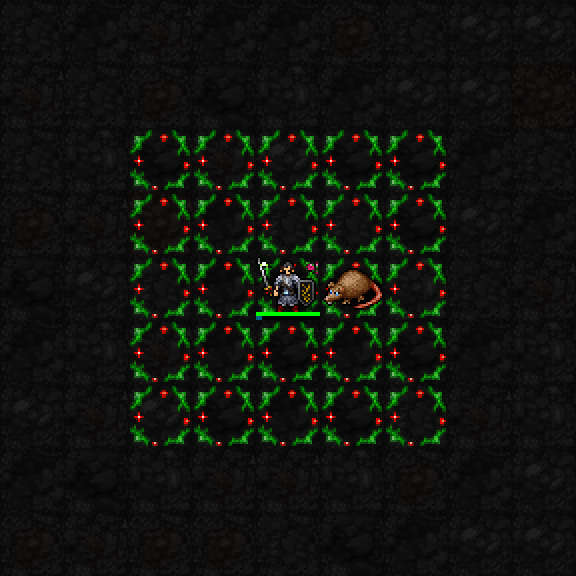
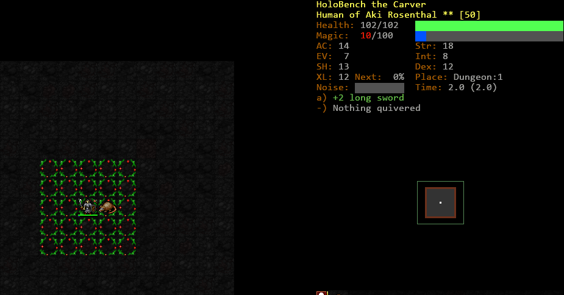
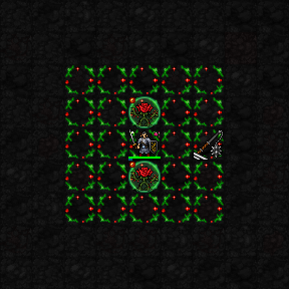
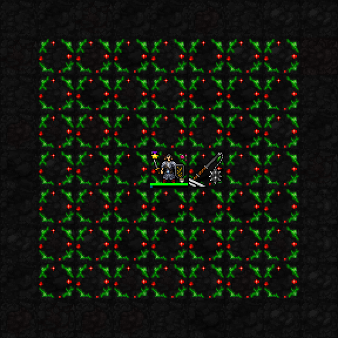

처음부터5×5. MP3 / 신앙 소모 없음 / 1턴, 완료1턴 뒤 개화, 개화 후20+0.5×기도술 턴 지속. 가시 최대3, 이동 지연·지속 피해 수치는 유지. 최소 기도술 없음.

우측MP 수치10→12: 실제 공격 bolt로 가시3중첩 적을 처치했습니다. 적 위치·HP·행동을 통제한SDL 검사장이며 일반 던전 플레이 영상은 아닙니다.
신앙50 / 최소 기도술 없음 / 추가 비용·행동 없음. 정원 안 경험치 대상 적이 가시3중첩으로 죽으면 min(3,1+floor(기도술/12))MP 회복. 기도술0/12/27에서1/2/3MP. 30aut마다 최대1회. 직접 공격·정원 지속 피해·아키 공격 식물 처치에 적용. 5성 만개는 소모 직전3중첩 인정. 최대MP까지 회복하며 풀MP이면 보상 저장·재사용 대기 발생 없음.

MP4 / 신앙3 / 1턴, 공격 식물2개. 지속8+0.3×기도술 턴, 최대2개. 정원 범위5×5 유지. 신앙75, 최소 기도술 없음.

MP6 / 신앙12 / 1턴. 기존7×7 만개·가시 폭발·식물 가속·시듦 수치는 유지. 신앙120, 최소 기도술 없음.
실제 일반 공격·정원 지속 피해·식물의 native bolt·만개 처치,3중첩/만료/정원 밖/경험치 없음/풀MP/신앙 경계/재사용 간격 검증. 새 프로세스 저장복원 후 재사용 간격과 실제 처치MP·상태·난수 일치.22신 회귀 및 기존 저장복원 검사 통과 후 일반 실행본 반영.